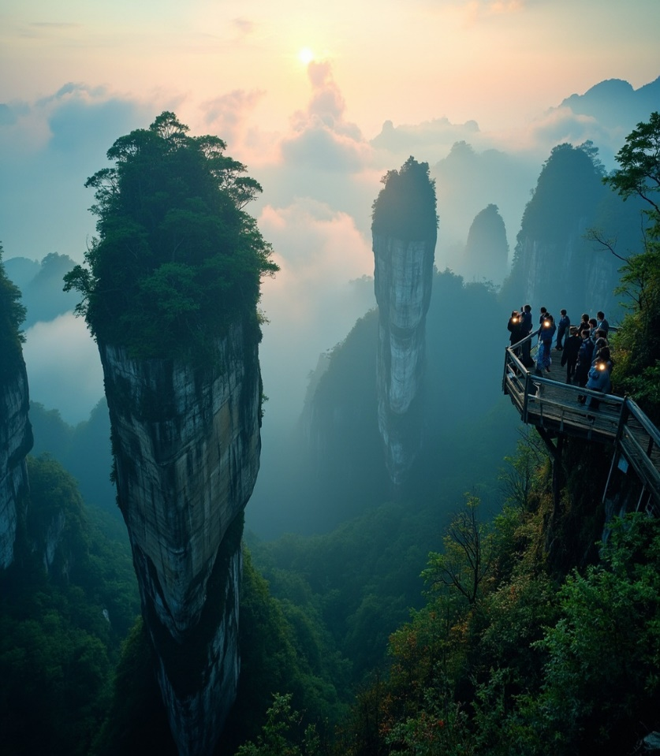
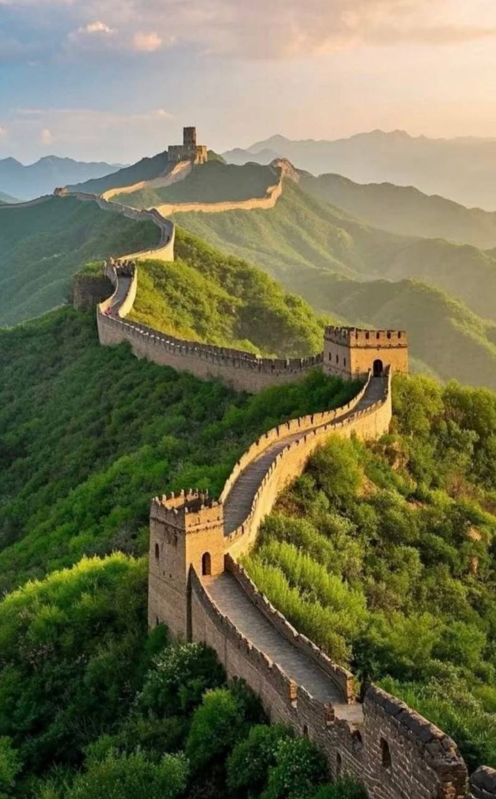
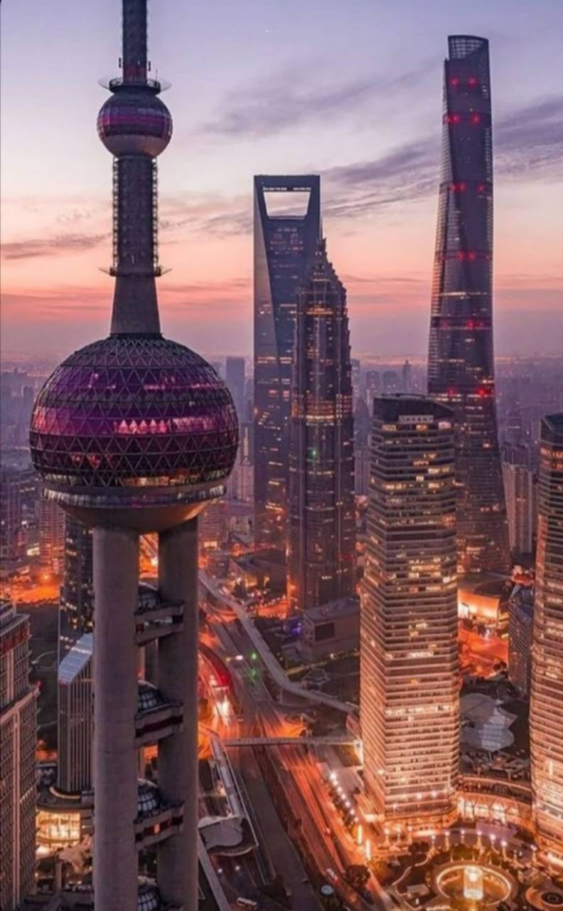
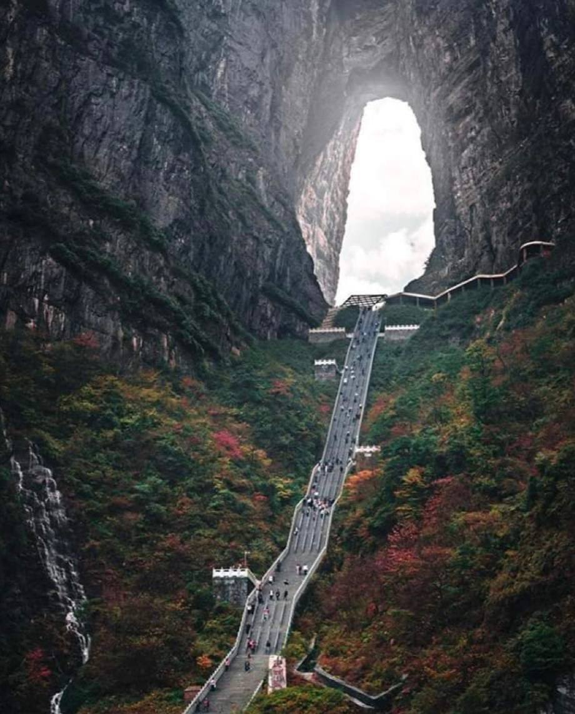
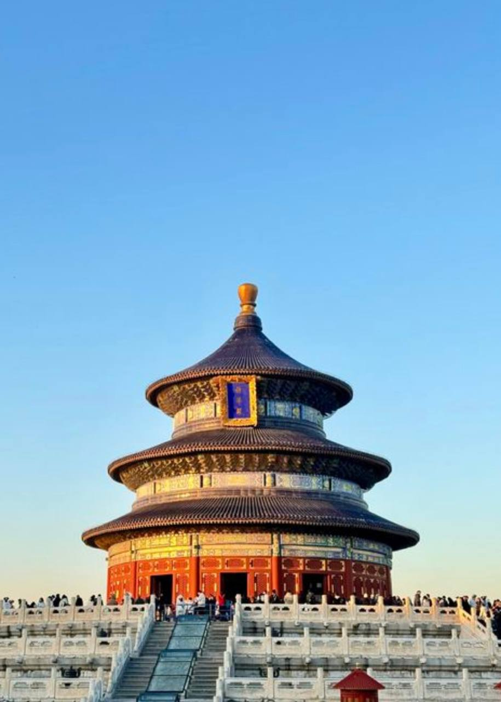
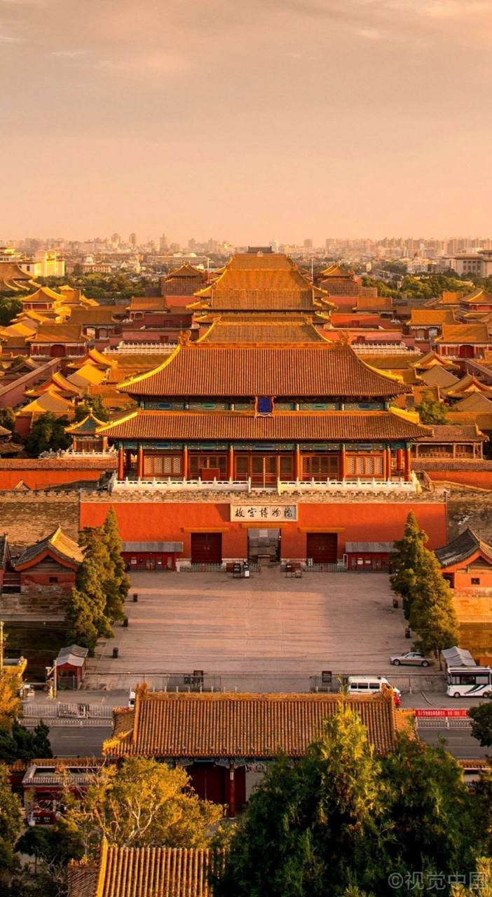
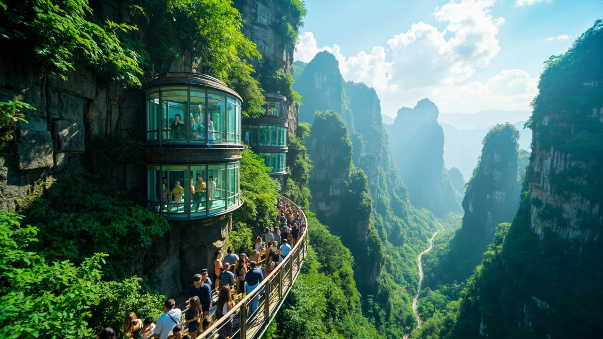
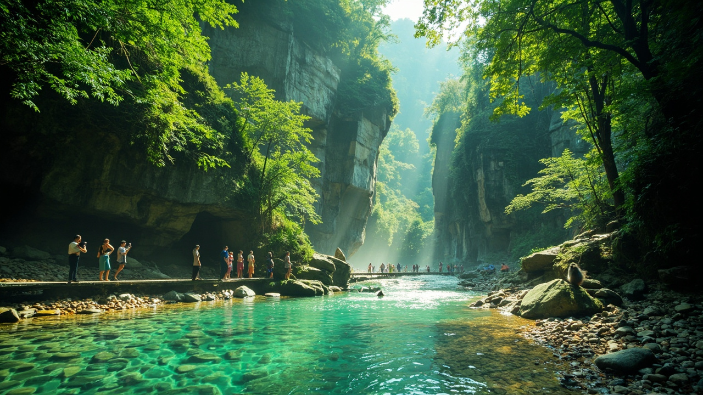

Увидите легендарные горы Аватара
Мир каменных столбов, тумана и смотровых площадок, который кажется декорацией к фантастическому фильму.
Другой мир - Китай
Императорский Пекин, мистический Чжанцзяцзе и футуристический Шанхай в одном насыщенном маршруте.
Впечатления

Мир каменных столбов, тумана и смотровых площадок, который кажется декорацией к фантастическому фильму.

Место силы и один из самых узнаваемых символов планеты.

Старый город, Бунд, Пудун и круиз по Хуанпу среди огней.

Стеклянный мост над каньоном или гора Тяньмэнь с Небесными вратами.
Маршрут
Храмы, Запретный город, Летний дворец, Великая стена, чайная церемония и пекинская утка.
Национальный парк, лифт Байлун, ручей Золотой Кнут, Тяньмэнь или стеклянный мост.
Сад Юйюань, Старый город, Наньцзин-роуд, Бунд, Пудун и прощальный ужин с видом.
Живая карта
Маршрут нанесен по ключевым точкам программы: Пекин, Великая стена, Чжанцзяцзе, Тяньмэнь, Шанхай и опциональный Чжуцзяцзяо.
Программа тура
Выберите день, чтобы увидеть локации, ритм и главный смысл каждого этапа маршрута.


Пекин
Сила впечатлений: мягкое погружение в Китай с первого дня.
Пекин
Сила впечатлений: Пекин как огромный живой музей.

Пекин - Чжанцзяцзе
Сила впечатлений: резкая смена мира - от империи к туманным скалам.

Чжанцзяцзе
Сила впечатлений: главный визуальный пик путешествия.
Чжанцзяцзе - Шанхай
Сила впечатлений: личный выбор между адреналином и сакральной высотой.
Шанхай
Сила впечатлений: старый и новый Китай в одном кадре.
Шанхай
Сила впечатлений: финальная точка большого маршрута.
Опционально
Сила впечатлений: мягкое послевкусие путешествия.
Мы все подготовили
Завтраки, приветственный ужин в Пекине и рекомендации проверенных мест по маршруту.
Отели 4+ сети Mercure и удобная логистика размещения между городами.
Трансферы, перелет в Чжанцзяцзе, скоростной поезд до Шанхая и перемещения по программе.
Хочу в Китай
Можно обсудить даты, состав группы, дополнительные опции и формат связи.